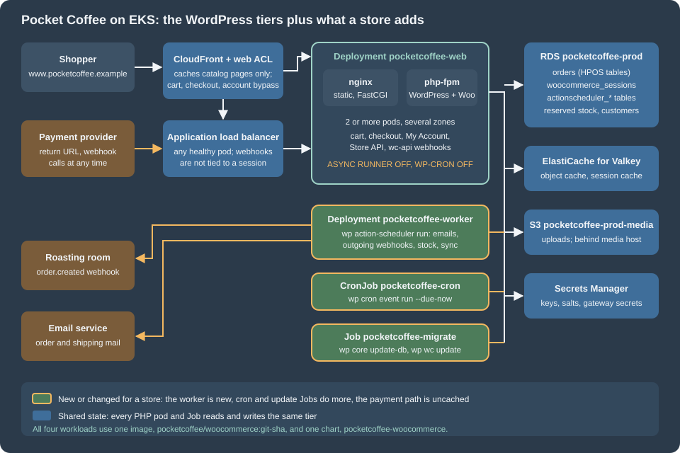

Cloud: Deployment Overview
|
This content was generated with the assistance of AI and should be verified against the official documentation before being relied on in production. |
This page was written against WooCommerce 11.2.1 (2026-10-09) on WordPress 7.1.4 (the security release of 2026-10-28; the WordPress pages of this site use 7.1.3 as their baseline), PHP 8.4 for the container image, MariaDB 11.8 or MySQL 8.4 on Amazon RDS, Kubernetes 1.36 or 1.37 on Amazon EKS and Action Scheduler 4.1.0, which WooCommerce 11.2.1 bundles, and was checked on 2026-10-29. It is the first of six pages on running a WooCommerce store on a cluster, and it names no prices: sizes are starting points to measure on your own traffic.
A WooCommerce store is a WordPress site, so everything the WordPress "Cloud Deployment at Scale" pages say still holds: stateless
pods behind a load balancer, a managed database, a shared object cache, media off the pod, one cron scheduler, schema
changes in a Job. This page does not repeat that; it lists what a store adds to it and sends you to the right page for each
addition. Start from Cloud Reference Architecture if you have not read it.
The running example is Pocket Coffee, the fictitious specialty-coffee shop of this section, moving www.pocketcoffee.example
(Spanish and English storefronts, one catalog) from a single virtual machine to an EKS cluster in eu-west-1. Shared cloud
fundamentals are linked, not repeated: EKS Clusters, Amazon RDS,
CloudFront and the AWS section.
What a store adds
A publishing site mostly serves the same page to everybody and writes rarely. A store reads and writes on behalf of one shopper at a time, takes money, and is called by other systems when it did not ask. Seven additions change the architecture:
| Addition | What it means in a cluster | Where it is covered |
|---|---|---|
Orders |
Orders are the data that must never be lost. In WooCommerce 11.2.1 they live in the HPOS tables ( |
|
Carts and sessions |
WordPress has no sessions; WooCommerce does. Customer data (cart, address, chosen shipping) is stored in the table |
|
Payments |
The shopper leaves for the provider and comes back, possibly on another pod, and may never come back at all. The order is completed by the provider’s server-to-server call, not by the browser. Payment secrets are secrets of the release, not of the pod. |
|
Webhooks |
Incoming ones ( |
|
Emails |
Order, shipping and refund emails are transactional. With the feature "deferred transactional emails" they are queued and sent by a background job; either way they leave through an email service, not a mail server in the pod. |
Amazon SES and Emails |
Background jobs |
Action Scheduler does the work that must not happen inside the shopper’s request: queued emails, webhook delivery, unpaid-order cancellation, session cleanup, HPOS sync, extension jobs, subscription renewals. A queue needs workers that are not the web pods. |
|
Pages that cannot be cached |
Cart, Checkout and My Account, |
Two more things follow from the list and belong to the release process: the store has its own database update routine on every WooCommerce upgrade (see Cloud: Releases and Database Updates), and moving an existing store has to account for open orders, scheduled actions and payment callbacks (see Cloud: Migrating a Store from a Single Server).
The rest of this page is the map: one diagram, the names the six pages share, the state table, the paths one order takes and the order to read things in.
The architecture

The blue and teal parts are the WordPress architecture unchanged. Shoppers reach CloudFront and its web ACL, then the load
balancer, which picks a healthy pod of the Deployment pocketcoffee-web. Each pod runs two containers: nginx serves static files
and hands PHP to php-fpm over FastCGI on the pod’s loopback address. Every pod talks to the same data tier: RDS for orders,
sessions, customers and the queue; Valkey for the object cache; S3 for media; Secrets Manager for the keys, salts and gateway
secrets, injected as environment variables when the pod starts.
The amber parts are what the store adds or changes:
-
The worker. A second Deployment,
pocketcoffee-worker, runs the same image with a different command: WP-CLI’s Action Scheduler runner. The web pods stop starting the queue themselves (the async request runner is off), so the queue does not compete with shoppers for PHP workers, and the worker’s size and count are tuned for jobs, not for page views. -
The cron job. The WordPress cron CronJob remains the only scheduler of WP-Cron events, but a store runs it every minute rather than every five: queued emails and recurring jobs that wait for a WP-Cron tick are shopper-visible delays.
-
The update job.
pocketcoffee-migraterunswp core update-dband the WooCommerce database update before the rollout, as a Job, so a new pod never meets an old schema. The WooCommerce part is new on top of the WordPress Job. -
The payment path. The arrow from the payment provider is the one that must never be cached, rate-limited as if it were a bot, or tied to a pod. It enters through the load balancer like a shopper, reaches any pod, and changes the order in RDS.
-
The outgoing arrows. Emails and outgoing webhooks leave from the worker (or from a web pod if emails are not deferred), to the email service and to the receiving systems. If a receiver is down the worker retries; the shopper never waits.
Everything that executes PHP, which is the web pods, the worker, the cron Job and the update Job, uses the same container image (see the next section) and the same environment, so a plugin runs the same code wherever it runs.
The names used on the six pages
The six store pages use one set of names, which extend the WordPress set listed in
Cloud Reference Architecture, so a snippet on one page connects to the
others. The store has its own Helm chart, pocketcoffee-woocommerce. It is built exactly the way the WordPress chart
lumenpress-wordpress is, with the same structure and the same helpers, except that the helper prefix is pc.* instead of
lp.* (pc.name, pc.labels, pc.selector, pc.phpImage, pc.nginxImage, pc.envFrom, pc.uploadsVolume,
pc.containerSecurity). The chart itself is written out on
Deploying on EKS with Helm; these pages show only what the store changes
and never repeat the Deployment, the Service, the HPA or the PDB.
| Item | Name |
|---|---|
Region and account |
|
Site and media hosts |
|
EKS cluster and namespace |
|
Helm release and chart |
release |
Image |
ECR repository |
Workloads |
Deployment |
Database |
RDS instance |
Secrets |
|
Media |
S3 bucket |
The tag wordpress:7.1.4-php8.4-fpm existed on Docker Hub on the check date (it was resolved with docker manifest inspect),
and so did wordpress:cli-2.12.0-php8.4, the WP-CLI image the examples assume. Confirm the tags with docker pull when you
build. WooCommerce is installed into the image at build time (from the Composer or the release zip of your pipeline), never
from the dashboard of a running pod: the same rule as plugins and themes on the WordPress pages, with more at stake because
an update runs a database routine.
The values file of the chart is the contract between the infrastructure and the workloads. The excerpt shows only the keys the store adds or changes; the rest is the WordPress values file with the names above. The final spelling of the worker keys is owned by Cloud: Action Scheduler Workers on Kubernetes.
# values.yaml of pocketcoffee-woocommerce: the store-specific additions (the rest is as in lumenpress-wordpress).
image:
repository: 123456789012.dkr.ecr.eu-west-1.amazonaws.com/pocketcoffee/woocommerce
tag: "" # required: the git SHA of the release
site:
url: https://www.pocketcoffee.example
tablePrefix: wp_
redisPrefix: "pocketcoffee:"
database:
host: pocketcoffee-prod.cxxxxxxxxxxx.eu-west-1.rds.amazonaws.com
name: pocketcoffee
user: wc_app
migrateUser: wc_migrate
secrets:
wordpressKey: pocketcoffee/prod/woocommerce
valkeyKey: pocketcoffee/prod/valkey
web:
replicaCount: 3
asyncQueueRunner: false # the web pods never start an Action Scheduler runner
wpCron: false # DISABLE_WP_CRON: only the CronJob runs WP-Cron events
worker: # new for a store: Deployment pocketcoffee-worker
enabled: true
replicaCount: 2
batchSize: 100
resources:
requests: { cpu: 250m, memory: 384Mi }
limits: { memory: 512Mi }
cron:
schedule: "* * * * *" # every minute: emails and syncs should not wait five minutes
store:
paymentWebhookPath: /wc-api/pocketcoffee_pay/ # reaches any pod; never cached
hpos:
enabled: true
compatibilityMode: false # posts-table sync off once HPOS is provenSource: Helm Docs: Charts
The excerpt is a values file, not a chart: web.asyncQueueRunner and web.wpCron are read by the chart’s ConfigMap template
and become environment variables that a small must-use plugin in the image turns into the action_scheduler_allow_async_request_runner
filter and the DISABLE_WP_CRON constant (both are written out in the Action Scheduler page). store.hpos.compatibilityMode
is likewise documentation of a decision rather than a setting WooCommerce reads from the environment: HPOS is switched with
wp option or wp wc hpos as shown on the database page. Treat the keys as the chart’s own vocabulary.
Where the state of a store lives
The WordPress page lists where each piece of WordPress state goes. A store has more state, and some of it is easy to miss because it sits in the database or in the uploads directory by default. The table is the checklist for the six pages: shared means one copy that every pod and Job uses, per pod means a copy that may differ or be lost when a pod is replaced.
| State | Default location in WooCommerce 11.2.1 | In the tiered design | Class |
|---|---|---|---|
Orders, order items, order meta, addresses |
HPOS tables |
One database; HPOS authoritative; posts sync off once proven |
Shared (RDS) |
Customers and accounts |
|
The same database |
Shared (RDS) |
Cart and customer session |
Table |
The table stays authoritative; Valkey caches reads; a recurring action |
Shared (RDS plus Valkey) |
Stock and reservations |
Product meta and lookup tables; the table |
The same database; hold time and unpaid-order cancellation run in Action Scheduler |
Shared (RDS) |
The job queue |
Tables |
The same database; claimed by the worker and never by the web pods |
Shared (RDS) |
WP-Cron events |
The option |
The same database; run by one CronJob |
Shared (RDS) |
Transients and object cache |
|
Valkey, with a prefix per site and environment |
Shared (Valkey) |
Product and customer-visible media |
|
S3 behind |
Shared (S3 or EFS) |
Downloadable product files |
|
The same store as the media, with the protection kept (private prefix or EFS path); not served by the CDN |
Shared (S3 or EFS) |
WooCommerce logs |
Files under |
Standard output, or the database handler, or a shared path; never a per-pod file that disappears with the pod |
Per pod unless moved |
Gateway secrets and API keys |
Settings stored in |
A secret reference read at start, or encrypted settings in the database with the keys identical on every pod |
Shared (Secrets Manager, RDS) |
Keys and salts |
|
A secret, identical on every pod; the Store API cart token and the nonces depend on them |
Shared (Secrets Manager) |
Webhook delivery log |
|
The same database |
Shared (RDS) |
Outgoing mail |
The server’s mail transport |
An email service through SMTP or its API |
External |
PHP code, plugins, theme |
Files in |
The container image |
Image |
OPcache, nginx buffers, |
The pod’s memory and disk |
Rebuilt at start |
Per pod |
The table was read from the WooCommerce 11.2.1 source and from the existing pages of this section, not from a running cluster. Two rows deserve a sentence more.
Sessions are the reason a store needs more than WordPress. WordPress core has no sessions, so a WordPress cluster needs
neither stickiness nor a session store. WooCommerce has woocommerce_sessions, and it is written on every change of the cart:
the session handler runs an INSERT ... ON DUPLICATE KEY UPDATE on the table and then sets the same value in the object
cache. Nothing is per pod, so stickiness is not needed either, but the write rate of that table is proportional to cart activity
and the table needs a cleanup that keeps up; both are on
Cloud: Database, HPOS and Sessions.
Logs and downloads are the two per-pod traps. WooCommerce writes its own logs (payment gateway traces, Action Scheduler
errors, webhook failures) under the uploads directory by default. On a pod with a read-only root file system and an emptyDir
for uploads, they disappear with the pod, which is exactly when you need them. Choose the logging handler on purpose, as
the database page explains. Downloadable products live in a protected subdirectory of the uploads; if the uploads move to S3,
the protection must move with them.
The paths of one order
The paths below follow one order of Pocket Coffee through the cluster. They show where each step may run, which is the reason for the amber parts of the diagram.
The same paths, as a table of who does the work:
| Step | Runs on | Needs |
|---|---|---|
Browse the catalog |
CDN edge on a hit; any web pod on a miss |
Cache rules that keep carts out of the cache |
Add to cart, update cart |
Any web pod ( |
The sessions table and the object cache |
Block checkout (Store API) |
Any web pod; the |
Identical keys and salts on every pod |
Create the order, reserve stock |
The web pod serving the checkout request |
A database primary: checkout never reads a stale replica |
Payment return and webhook |
Any web pod, possibly not the one that created the order |
|
Order and shipping emails |
The worker when emails are deferred; the web pod otherwise |
An email service, and a running worker |
Outgoing webhooks |
The worker (the async delivery is an Action Scheduler action in the group |
A running worker, reachable receivers |
Unpaid-order cancellation, session and draft-order cleanup, HPOS background sync |
The worker (all of them are Action Scheduler actions: |
A running worker |
Schema updates after an upgrade |
The Job |
|
The paths hold only if three rules hold, and they are the three the pages that follow turn into configuration: nothing a shopper or a provider needs is cached, nothing is stored on the pod, and every job has exactly one kind of runner. If the payment webhook arrives while the pod that created the order has already been replaced, the order is still correct, because the pod held nothing; if the worker is down, orders are still taken and paid, and the emails and outgoing webhooks wait in the queue until it is back.
Single server and tiered, for a store
The WordPress page makes the general case for staying on one server when that is enough, and the same reasoning holds for a store with one change in emphasis. A store has money and orders on the line, so the cost of an outage is measurable and a managed database with a standby is often the first step worth taking, before any pod is added. The trade is the same: simplicity against availability.
| One server | Tiered on Kubernetes | |
|---|---|---|
Checkout during a deploy |
The server is updated in place; a failed update interrupts checkout |
A rolling update keeps most pods serving; schema changes run first in a Job |
A payment webhook during a failure |
Lost if the server is down; the provider retries for a while |
Delivered to a surviving pod |
Background jobs |
Share the server with the shop; one runaway import slows checkout |
A worker Deployment with its own resources |
Peak season |
The largest machine you buy |
Pods and workers added by an autoscaler; the database stays one writer |
Plugin updates |
From the dashboard |
Through the image and a pipeline |
Operating it |
A system administrator |
Kubernetes, a cloud, infrastructure as code and a pipeline |
Stay on one server, or on a managed WooCommerce host, when traffic is modest, a few minutes of downtime is acceptable and no team operates Kubernetes. The decision criteria are on Cloud Reference Architecture (section "When one server, or a managed WordPress host, is still right") and the middle paths on Google Cloud, Azure and Alternatives to Kubernetes. The store-specific version of the question is whether the shop’s revenue per hour of downtime justifies the cost of operating the tiers; the answer is a business number that this section cannot give.
Tutorials that start a store from a Bitnami WordPress image or chart are out of date: the images and charts are no longer a safe default, as
Cloud Reference Architecture explains in its section "The end of the Bitnami images". The pages of
this section build on the official wordpress image and on managed services.
Reading path
Read the WordPress pages first; the store pages add to them and assume their names and their Helm chart.
-
Cloud Reference Architecture: the architecture, the state table and the names that this page extends.
-
Managed Database: RDS and Aurora: the engine, the parameter group, TLS, users and the connection math, which the store database page builds on.
-
Media: S3 Offload, EFS and CloudFront: media for the catalog, and the place to put downloadable files.
-
Object Cache, Sessions and Cron in a Cluster: Valkey and the one-cron-scheduler pattern that the store reuses.
-
EKS Infrastructure with OpenTofu and Deploying on EKS with Helm: the infrastructure and the chart
lumenpress-wordpressthatpocketcoffee-woocommercecopies. -
Releases, Upgrades and Autoscaling on Kubernetes: the pipeline the store extends with its update routine.
Then the store pages, in this order:
-
This page: the map.
-
Cloud: Database, HPOS and Sessions: sizing for order volume, the HPOS tables and sync, the sessions table, read replicas and checkout, and the growth of the order and queue tables.
-
Cloud: Action Scheduler Workers on Kubernetes: turning off the web runners, the worker Deployment, concurrency, scaling on pending actions and failure handling.
-
Cloud: Caching, CDN and Checkout: what CloudFront may cache, the WooCommerce cookies, the Store API, webhooks reaching any pod and IP allow-lists.
-
Cloud: Releases and Database Updates: the database update as a Job, extension updates through the image, a peak-season freeze and rollback with snapshots.
-
Cloud: Migrating a Store from a Single Server: an order-safe cutover, HPOS state, scheduled actions, renewals and payment webhook URLs.
The existing WooCommerce pages supply the application side that these pages configure: HPOS, Action Scheduler, Performance and Security, Payment Gateways, REST API and Webhooks and WC-CLI. The Kubernetes and AWS fundamentals are in Helm, Jobs and CronJobs and EKS Clusters.
Pitfalls
-
Treating the store as a bigger blog. The web tier of a store is sized for dynamic traffic: a large part of a shopping session never touches the CDN. Plan for more PHP workers per visitor than a publishing site needs.
-
Leaving the async runner and WP-Cron on in the web pods. The queue then runs inside shopper requests, on whichever pod the load balancer chose, in parallel with the worker. Disable both on the web pods and run exactly one kind of runner.
-
A worker that is not running. Orders keep working; emails, outgoing webhooks, stock holds and cleanups quietly stop. Alert on the age of the oldest pending action, not only on pod health.
-
Caching the payment return or the webhook. A cached
wc-apiresponse, or a WAF rule that blocks the provider’s addresses, turns a paid order into an unpaid one with a puzzled customer. The rules are on the caching page. -
Per-pod logs. The default WooCommerce log directory is under the uploads; on a read-only pod it is gone after the next rollout. Pick the handler before the first incident.
-
Reading checkout from a replica. A read replica lags; a session, stock level or order read from one can be stale. Checkout and order paths must read the primary (see the database page).
-
Different keys on different pods. The cart token of the Store API is signed with a key derived from the site’s salts (
wp_salt()), and the nonces depend on them too. A pod with other values rejects the shopper’s requests while the rest accept them. -
Updating WooCommerce from the dashboard. The update runs a database routine from a web request and changes files that the next pod start discards. Update through the image and the Job.
-
Copying the diagram without the cost model. A tier that is not needed is still operated and paid for; the worker and the cron Job are small, but every tier is a thing to patch.
Version notes and what was not verified
-
Verified against the source. The WooCommerce 11.2.1 release zip was downloaded from WordPress.org and read: the session handler (table, cache group, default lifetimes of one day before a refresh and an expiry after two days for a guest or one week for a logged-in customer, the action
woocommerce_cleanup_sessionsevery 12 hours), the asynchronous webhook delivery (actionwoocommerce_deliver_webhook_async, groupwoocommerce-webhooks), the deferred transactional email queue (hookwoocommerce_send_queued_transactional_email, enabled by the featuredeferred_transactional_emails), the logging default (a file handler underuploads/wc-logs, directory filterwoocommerce_log_directory, a database handler available), the reserved-stock table and the default hold of 60 minutes,wp wc update, and the Action Scheduler 4.1.0 filtersaction_scheduler_allow_async_request_runner,action_scheduler_queue_runner_batch_sizeandaction_scheduler_queue_runner_concurrent_batches. -
Validated locally. The values excerpt was placed in a minimal chart named
pocketcoffee-woocommercewith the helperspc.*;helm lint --set image.tag=...passed, andhelm template | kubeconform -strict -summary -ignore-missing-schemasreported two valid resources (a ConfigMap and a Deployment). Withoutimage.tag, the render fails on purpose, as in the WordPress chart. The tagswordpress:7.1.4-php8.4-fpmandwordpress:cli-2.12.0-php8.4were resolved withdocker manifest inspect. The SVG was checked withxmllint. -
Not verified. Nothing was deployed to a cluster, to AWS or to a payment provider. The Mermaid diagram was written to the rules of this repository but was not rendered with
npm run validate:mermaidin this task. The environment variablesPC_AS_ASYNC_RUNNERandPC_DISABLE_WP_CRONand the must-use plugin that reads them are a design of this series, not a WooCommerce feature; the filter and the constant they set are the documented ones. The sizing of the worker is a starting point. WooCommerce 11.3.0 was in beta (2026-10-26) on the check date and was not tested.